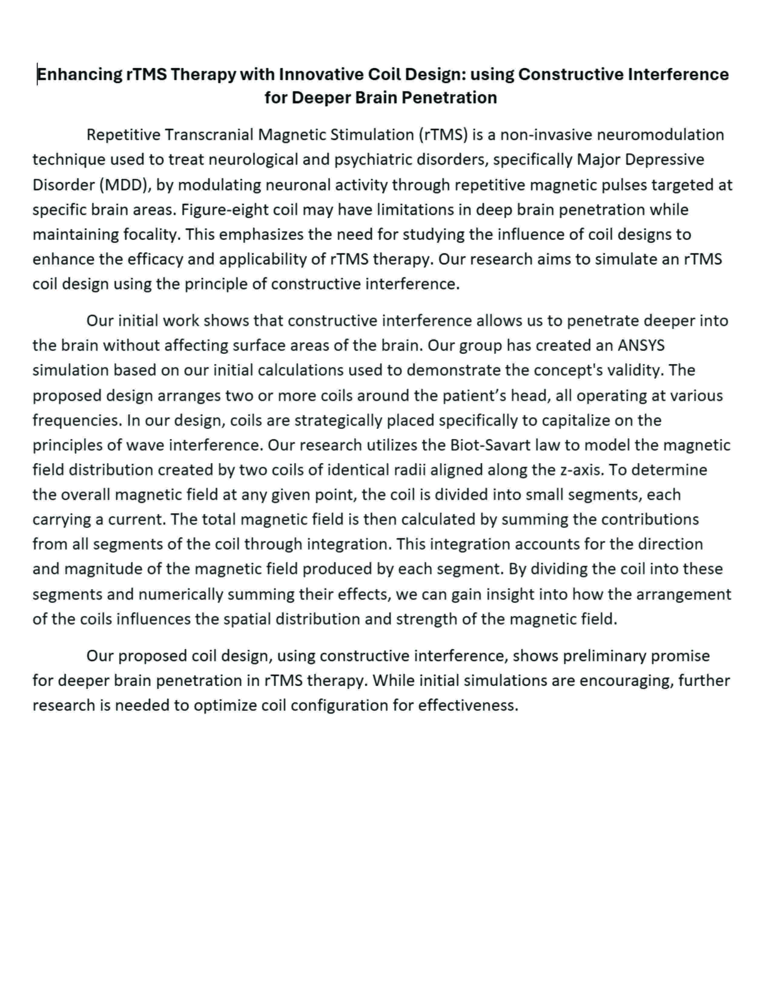

References
[1] S. M. McClintock et al., “Consensus Recommendations for the Clinical Application of Repetitive Transcranial Magnetic Stimulation (rTMS) in the Treatment of Depression: (Consensus Statement),” J. Clin. Psychiatry, vol. 79, no. 1, pp. 35–48, Feb. 2018, doi: 10.4088/JCP.16cs10905.
[2] J. J. Mahoney, C. A. Hanlon, P. J. Marshalek, A. R. Rezai, and L. Krinke, “Transcranial magnetic stimulation, deep brain stimulation, and other forms of neuromodulation for substance use disorders: Review of modalities and implications for treatment,” Journal of the Neurological Sciences, vol. 418, p. 117149, Nov. 2020, doi: 10.1016/j.jns.2020.117149.
[3] S. L. Garnaat, S. Yuan, H. Wang, N. S. Philip, and L. L. Carpenter, “Updates on Transcranial Magnetic Stimulation Therapy for Major Depressive Disorder,” Psychiatric Clinics of North America, vol. 41, no. 3, pp. 419–431, Sep. 2018, doi: 10.1016/j.psc.2018.04.006.
[4] S. K. Mann and N. K. Malhi, “Repetitive Transcranial Magnetic Stimulation,” in StatPearls, Treasure Island (FL): StatPearls Publishing, 2024. Accessed: Apr. 03, 2024. [Online]. Available: http://www.ncbi.nlm.nih.gov/books/NBK568715/
[5] H. R. Siebner et al., “Transcranial magnetic stimulation of the brain: What is stimulated? – A consensus and critical position paper,” Clin Neurophysiol, vol. 140, pp. 59–97, Aug. 2022, doi: 10.1016/j.clinph.2022.04.022.
[6] “Tutorial — SimNIBS 4.1.0 documentation.” Accessed: Apr. 03, 2024. [Online]. Available: https://simnibs.github.io/simnibs/build/html/tutorial/tutorial.html
[7] “Ansys Maxwell | Electromechanical Device Analysis Software.” Accessed: Apr. 03, 2024. [Online]. Available: https://www.ansys.com/products/electronics/ansys-maxwell
[8] “Affinity Designer: award-winning graphic design software,” Affinity. Accessed: Apr. 03, 2024. [Online]. Available: https://affinity.serif.com/en-us/designer/